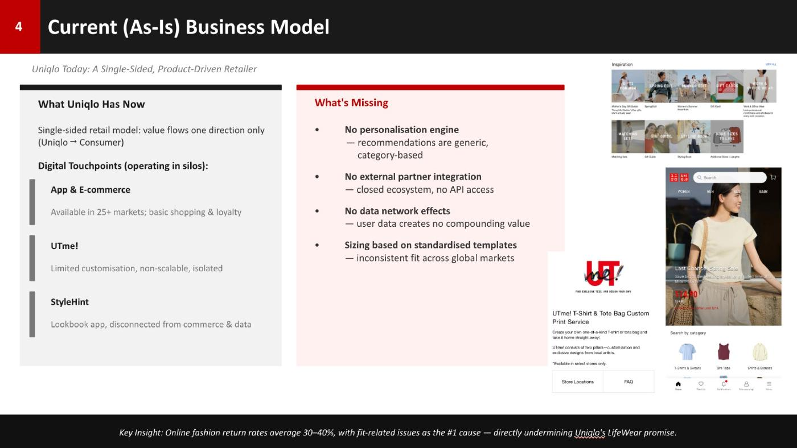
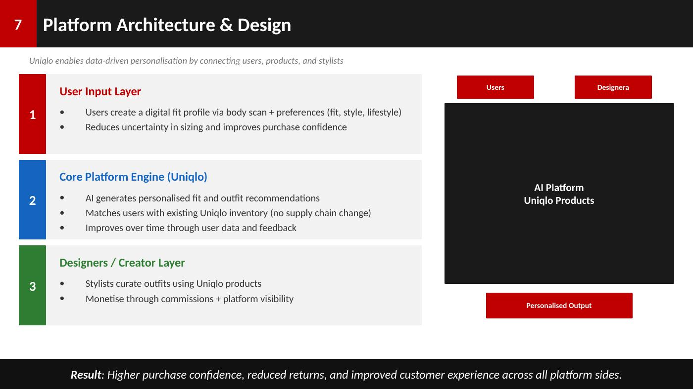

The idea in one minute
Create a persistent Fit Profile that learns from measurements, purchases, returns, and feedback. Match that profile to UNIQLO's standardized SKU catalog, then use the accumulated data to improve recommendations and create value for product teams and selected partners.
Why fit is a platform opportunity
The case starts with a familiar e-commerce problem: customers must choose sizes without trying products on, and poor fit contributes to returns. Instead of treating this as only a recommendation feature, the project asks whether fit data can become a reusable platform asset.

How it works

Why this becomes more than a retailer feature
Consumers
Receive personalized fit/style recommendations and generate feedback data.
Product teams / providers
Use aggregated fit and trend intelligence to improve product decisions.
Creators / partners
Curate outfits or participate in selected co-creation/distribution.
UNIQLO
Owns the matching layer, data loop, inventory standardization, and governance.
The data flywheel
Business recommendation
Scope & credibility
The project designed the business model, data architecture, network effects, monetization, and go-to-market logic. Any return-rate or adoption improvements should be treated as targets or assumptions, not achieved results.